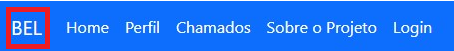
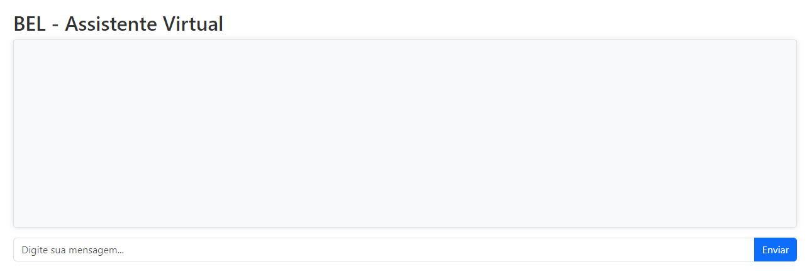
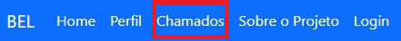
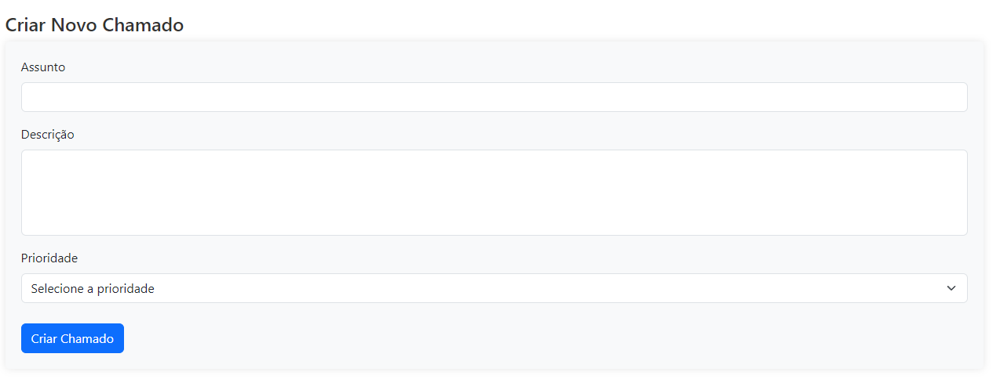
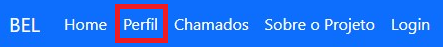

Para que usar a plataforma?
Nosso projeto foi desenvolvido com o intuito de ajudar as pessoas do service desk receberem e abrirem os chamados caso seja necessário, e ao mesmo tempo disponibilizamos um chatbot que é abastecido com modelos feitos através de aprendizado de máquina, sua função é simples, responder dúvidas de como solucionar os problemas dos chamados.
Como posso usar o chatbot?
Para usar o chatbot é muito simples, basta apertar a opção BEL no nosso menu como mostra a imagem abaixo.

Após isso, basta mandar mensagem no chatbot. Temos certeza que seu problema será solucionado!

Ou clique neste botão!
Conhecer BEL!Onde ver os chamados recebidos e abrir novos?
Na aba de CHAMADOS, nela você pode ter acesso tanto aos chamados que foram recebidos quanto aos que foram abertos e enviados para processos sucessores.

Existe também a possibilidade de criar um chamado nessa mesma aba, basta descer um pouco a tela que aparecerá a caixa para abrir chamados.

Ou clique neste botão!
Crie um ChamadoÉ possível alterar meu email ou senha dentro da plataforma?
Sim, vá até PERFIL no menu superior, lá você será direcionado para a página de perfil, onde você poderá configurar seus dados pessoais.

Ou clique neste botão!
Personalizar perfilUma parceria entre: